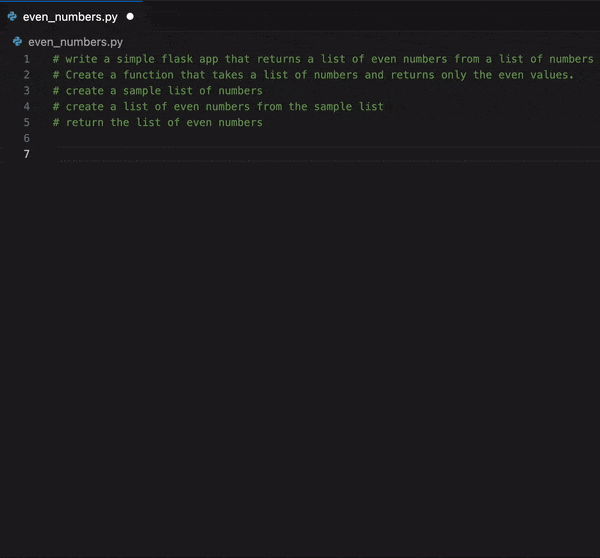
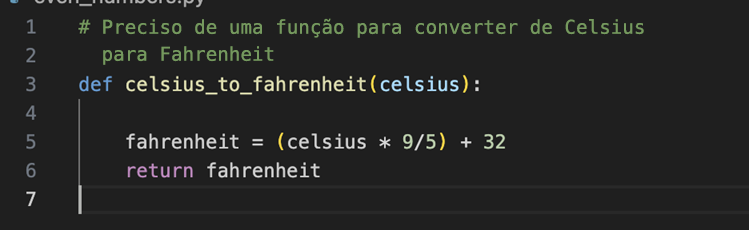
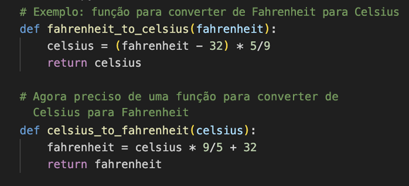
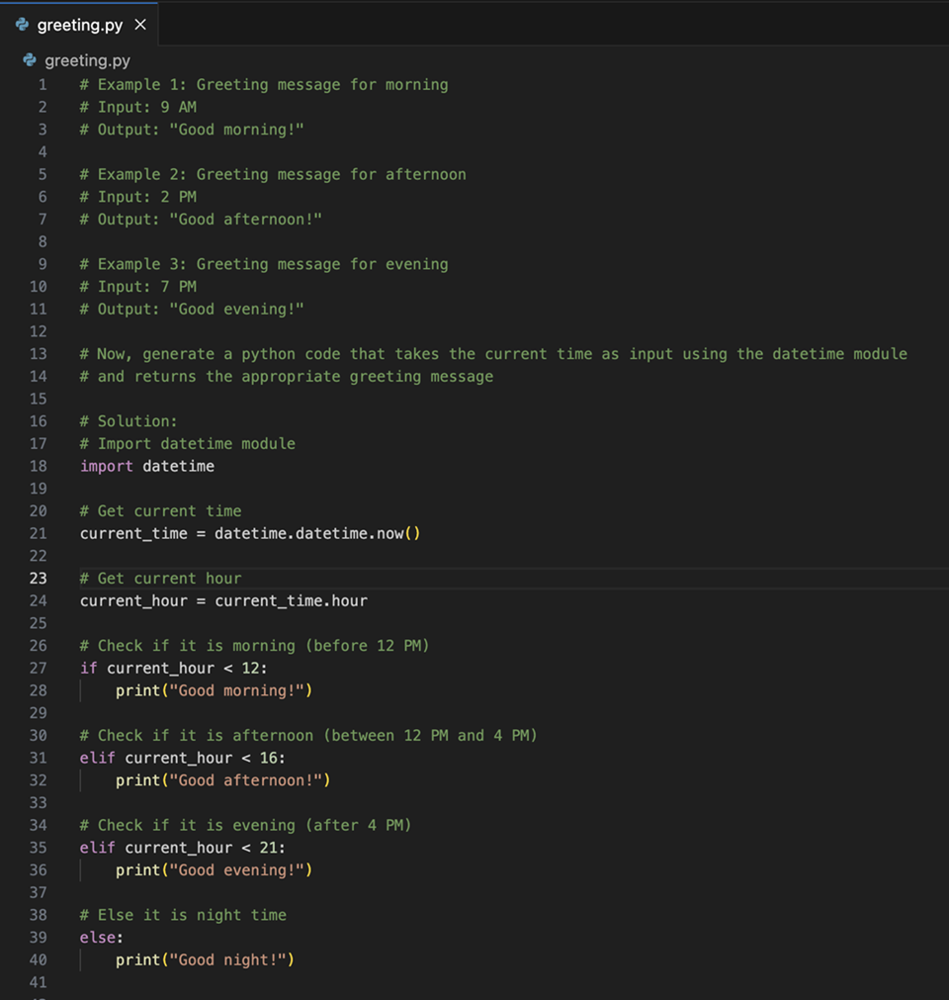
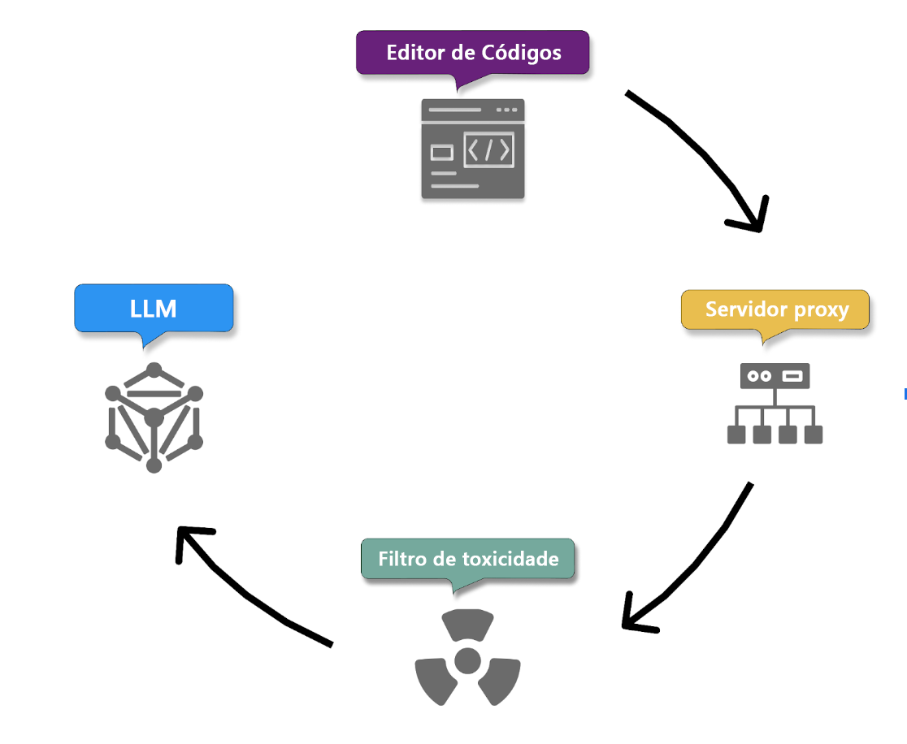
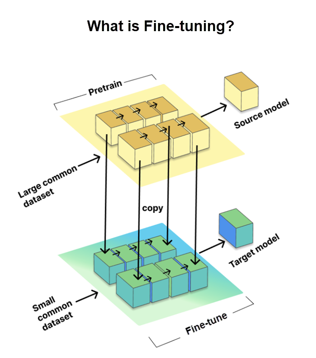

Engenharia de Prompt com o GitHub Copilot
PASIA - Aula T.5
DAC - ICET - Universidade Federal de Lavras
08/09/2025
O conteúdo dessa aula é baseado em materiais sobre o GitHub Copilot e o VS Code.
Introdução
O que é engenharia de Prompt?
- Forma de comunicar ao Copilot o que você precisa.
- Processo de elaborar instruções claras para guiar assistentes de IA.
- Objetivo
- Gerar código adequado ao contexto e adaptado às necessidades específicas do projeto.
- Garantindo que seja correto sintática, funcional e contextualmente.
- Qualidade do código gerado depende da clareza e precisão do prompt.
Princípios da engenharia de Prompt — os 4 Ss
- Single - Foco único
- Specific - Específico
- Short - Curto
- Surround - Contexto
Princípios da engenharia de Prompt — os 4 Ss
- Foco único (single)
- Foque em uma tarefa ou pergunta única e bem definida.
- Essa clareza é fundamental para obter respostas precisas e úteis.
- Específico (specific)
- Dê instruções explícitas e detalhadas.
- Especificidade leva a sugestões mais precisas e aplicáveis.
Princípios da engenharia de Prompt — os 4 Ss
- Curto (short)
- Seja conciso: ser específico, mas direito ao ponto.
- A ideia é garantir clareza sem sobrecarregar o Copilot ou complicar a interação.
- Contextual (surround)
- Use nomes de arquivos descritivos e mantenha arquivos relacionados abertos no editor.
- Isso dá contexto rico ao Copilot, levando a sugestões mais relevantes.
Melhores práticas
Vamos ver agora algumas práticas recomendadas para criar prompts eficazes.
- Forneça clareza suficiente
- Forneça contexto suficiente
- Forneça exemplos
- Itere
1. Forneça clareza suficiente
Exemplo
Escreva uma função Python que receba uma lista de inteiros e
retorne uma nova lista contendo apenas os números pares.- Esse prompt tem foco único, é específico e conciso.
Aqui vale tudo que já vimos antes sobre decomposição de problemas.
2. Forneça contexto suficiente
Quanto mais informação contextual for fornecida, mais aderente será a sugestão do Copilot.
- Ex.: Comentários no topo do arquivo dão mais detalhes sobre o que você quer.
# Escreva um app Flask que retorna uma lista de números pares a partir de uma lista de números
# Crie uma função que pega uma lista de números e retorne somente os números pares
# Crie uma lista de números de exemplo
# Crie uma lista de números pares a partir da lista de números
# retorna a lista de números2. Forneça contexto suficiente

2. Forneça contexto suficiente
Repare que no exemplo anterior foram dados mais detalhes mas ao mesmo tempo as instruções são curtas e objetivas.
- Esta prática segue o princípio curto, equilibrando detalhe com concisão para garantir clareza e precisão na comunicação.
2. Forneça contexto suficiente
Você também pode controlar o que o Copilot considera como contexto.
- Você pode, por exemplo, selecionar um trecho de código para que o Copilot gere código relacionado a esse trecho.
- Além disso, o Copilot verifica os arquivos que estão atualmente abertos no editor para analisar o contexto.
- Portanto, mantenha arquivos relacionados abertos para fornecer contexto adicional (e feche os que não são relevantes).
2. Forneça contexto suficiente
Outra sugestão é que se você já souber a biblioteca que pretende trabalhar, é melhor importá-la manualmente antes de pedir ao Copilot para gerar o código.
- Ex.: se for usar o
Pandas, importe-o antes de pedir para carregar os dados de um arquivo CSV. - Isso direciona melhor o Copilot já que existem diferentes bibliotecas para manipulação de dados em Python.
2. Forneça contexto suficiente
Utilize nomes de funções e classes descritivos.
- Isso ajuda o Copilot a entender melhor o propósito do código.
- E, claro, comentários docstring fornecem contexto ainda mais específico.
2. Forneça contexto suficiente
Forneça exemplos de código.
- Se for trabalhar com uma nova biblioteca, e o Copilot gerar respostas de outras ou de versões antigas,
- forneça um exemplo de uso da nova biblioteca mesmo que não seja o que você quer fazer.
- Isso ajuda o Copilot a gerar código para a versão mais recente da biblioteca.
- (e depois apague o código de exemplo que colocou).
Dica
Dica: se estiver fazendo experimentações de código por você mesmo, pode ser interessante desabilitar temporariamente o Copilot, evitando que esses “experimentos” interfiram no contexto do Copilot.
Dica
Dica: mantenha uma boa qualidade de código. Aqui vale o princípio “garbage in, garbage out”. Ou seja, o contexto pode piorar se o código que você está escrevendo estiver com muitos erros ou for de baixa qualidade.
3. Forneça exemplos
O uso de exemplos pode deixar mais claros seus requisitos e expectativas.
- Ilustrando conceitos abstratos para o Copilot.
4. Itere
Uma das chaves para desbloquear todo o potencial do Copilot é a prática da iteração.
- Nem sempre seu primeiro prompt produzirá um código perfeito.
- Se a primeira saída não for ideal, trate-a como uma etapa de um diálogo.
- Apague o código, melhore o comentário inicial com detalhes e exemplos e deixe o Copilot tentar novamente.
4. Itere
Dica
Usando o chat com Ctrl+I, você pode pedir ao Copilot para melhorar o código que ele mesmo gerou.
Ex.: “Adicione uma função de fibonacci”, na mesma caixa, se necessário, pode continuar com instruções como “não use recursão” e depois “melhore os nomes das variáveis”.
Como o Copilot aprende com seus prompts
O Copilot usa modelos de IA que foram treinados com grande quantidades de dados.
- Para melhorar seu reconhecimento em contextos de código específicos, geralmente fornecemos exemplos.
Essa prática é inspirada em técnicas de aprendizado de máquina.
- Aprendizado Zero-Shot.
- Aprendizado One-Shot.
- Aprendizado Few-shot.
Aprendizado Zero-Shot
É quando o Copilot gera o código sem nenhum exemplo específico, confiando apenas em seu treinamento básico.
- Escrevemos o comentário do que queremos diretamente, sem exemplos.

Aprendizado One-Shot
É fornecido um único exemplo, ajudando o modelo a gerar uma resposta mais sensível ao contexto.
- Talvez você já tenha uma função semelhante e queira uma variante, por exemplo.

Aprendizado Few-Shot
Nesse métdodo, o Copilot é apresentado a vários exemplos, equilibrando a imprevisibilidade do zero-shot com a precisão do ajuste fino do one-shot.
- Suponha que deseje gerar um código que envie saudações ao usuário dependendo da hora do dia.
Aprendizado Few-Shot

Fluxo de Processamento de Prompts
Vamos agora ver como o Copilot transforma nossos prompts em códigos utilizáveis.
- Repare que é um processo de entrada (processamento do prompt) e saída (código gerado).
Fluxo de entrada

1. Transmissão segura + Coleta de contexto
Prompts transmitidos via HTTPS (seguro e confidencial).
Simultaneamente, o Copilot coleta detalhes do ambiente:
- Código antes e depois do cursor (contexto).
- Nome e tipo do arquivo que está sendo editado.
- Abas adjacentes abertas, para que a suestão se alinhe a outros trechos de código do mesmo projeto.
- Informações sobre a estrutura do projeto e caminhos de arquivos.
- Informações sobre linguagnes de programação e frameworks usados.
2. Filtro de proxy
Prompt passa por servidor proxy no Azure (mantido pelo GitHub).
- Filtra tráfego malicioso
- bloqueando tentativas de manipulação do prompt
- ou ataques de injeção para obter detalhes sobre como o modelo gera as sugestões de código.
3. Filtragem de toxicidade
Antes da geração, Copilot utiliza filtros para que o código gerado não inclua e nem promova:
- Discurso de ódio ou conteúdo inapropriado (que pode ser ofensivo, por exemplo).
- Dados pessoais (nomes, endereços, IDs) para preteger a privacidade e a segurança dos dados do usuário.
4. Geração de código com o modelo LLM
- Prompt filtrado → enviado para modelos de linguagem (LLMs).
- As sugestões são baseadas no entendimento do Copilot tanto do prompt quanto do contexto,
- para produzir resultados que sejam relevantes, funcionais e alinhados aos requisitos específicos do projeto.
Fluxo de Saída
![] (imagens/engprompt-3-github-copilot-outbound-flow.png){fig-align=“center” fig-alt=“Fluxo de saída do processamento de prompts do GitHub Copilot.” style=“max-height: 60vh;”}
5. Pós-processamento e validação da resposta
Filtro de toxicidade aplicado novamente sobre o código gerado.
Verificações adicionais feitas pelo servidor de proxy:
- Qualidade do código: verificação de bugs, vulnerabilidades comuns (como cross-site scripting XSS, ou injeção de SQL).
- Objetivo é tentar garantir robustez e segurança.
5. Pós-processamento e validação da resposta
- Correspondência com código público (opcional)
- Administradores podem habilitar um filtro que impede o Copilot de retornar sugestões com mais de ~150 caracteres que sejam muito semelhantes a trechos de código públicos existentes no GiHub.
- Objetivo é evitar sugestão de código que seja coincidente com conteúdo original.
Se o código gerado falhar nessas verificações → pode ser truncada ou descartado.
6. Entrega de sugestões e início do ciclo de feedback
Apenas respostas aprovadas chegam ao usuário.
Copilot inicia seu ciclo de feedback baseado em ações do usuário.
- Para aumentar seu próprio conhecimento com base nas sugestões aceitas.
- Para aprender e se aprimorar por meio de modificações e rejeições das sugestões.
7. Repetição para prompts subsequentes
O processo é repetido à medida que o usuário forneça mais prompts.
- Com o tempo o Copilot aplica os dados acumulados de feedback e de interação.
- Incluindo os detalhes de contexto fornecidos.
- Para aprimorar o seu entendimento da intenção do usuário e refiniar seus recursos de geração de código.
Dados do GitHub Copilot
Tratamento de dados — Sugestões de código
- Copilot no editor de código não retém solicitações.
- Código, comentários e contexto são usados apenas no momento da sugestão.
- Após gerar a sugestão → solicitações são descartadas.
- Assinantes individuais podem recusar o compartilhamento de dados com o GitHub para treinar modelos.
Tratamento de dados — Copilot Chat
Funciona como plataforma interativa, com histórico de conversas.
Difere das sugestões de código (autocomplete):
- Formatação: respostas adaptadas à interface de chat, como realce de código.
- Participação do usuário: permite perguntas de acompanhamento e refinamento.
- Retenção: solicitações/sugestões/contexto podem ser mantidos por até 28 dias (varia conforme o editor).
Tipos de solicitações no Copilot Chat
Perguntas diretas: conceitos, bibliotecas, dúvidas pontuais.
- Ex.: “Como implementar quicksort em Python?”
Solicitações relacionadas ao código: geração, modificação, explicação.
- Ex.: “Explique este trecho de código.”
Consultas abertas: boas práticas, dicas gerais.
- Ex.: “Como melhorar o desempenho de um app Python?”
Solicitações contextuais: forneça código ou cenários para ajuda personalizada.
- Ex.: “Aqui está parte do meu código, sugira melhorias.”
Limitações — Janelas de contexto
- Janela de contexto = quantidade de código/texto que o modelo processa simultaneamente.
- Isso inclui não só o prompt utilizado, mas também o contexto do arquivo e do projeto.
- Limitação pode variar conforme versão e implementação.
LLMs no Copilot
- O GitHub Copilot é alimentado por LLMs (Large Language Models).
- Eles permitem escrever código de forma integrada e com reconhecimento de contexto.
O que são LLMs?
- Modelos de IA treinados para entender, gerar e manipular linguagem natural.
- Volume de dados de treinamento: bilhões de tokens de texto de diversas fontes.
- Compreensão contextual: produzem respostas relevantes e coerentes.
- Base em aprendizado de máquina: redes neurais com milhões ou bilhões de parâmetros.
- Versatilidade: aplicáveis a múltiplos domínios e idiomas.
Ajuste fino de LLMs
- Processo que adapta modelos pré-treinados a tarefas específicas.
- Utiliza:
- Modelo de origem → conhecimento amplo, pré-treinado.
- Conjunto de dados de destino → dados específicos da tarefa.
- Modelo de origem → conhecimento amplo, pré-treinado.
- Benefício: melhora a precisão em contextos especializados.
Ajuste fino de LLMs

Ajuste fino LoRA
- LoRA = Low-Rank Adaptation.
- Em vez de ajustar todos os parâmetros da rede:
- Adiciona módulos menores treináveis em cada camada.
- Mantém o modelo original inalterado.
- Adiciona módulos menores treináveis em cada camada.
- Vantagens:
- Mais rápido e econômico
- Mais eficiente que adaptadores e prefix tuning
- “Trabalhar de forma mais inteligente, não mais difícil”
- Mais rápido e econômico
Avaliação
1. O que é o GitHub Copilot?
- Uma plataforma para os repositórios de código.
- Um modelo alimentado pelo aprendizado de máquina.
- Um assistente para codificação.
- Um serviço para hospedagem na Web.
2. Qual é a função do prompt na utilização eficaz do GitHub Copilot?
- Gera correções instantâneas de bugs.
- Aprimora a qualidade das sugestões de código.
- Automatiza totalmente o processo de codificação.
- Implementa a colaboração em tempo real.
3. Qual das regras a seguir é um dos princípios do Método 4S da engenharia de Prompt?
- Resuma os objetivos do código de forma concisa.
- Especifique as instruções de forma explícita e em detalhes.
- Simplifique os processos para obter sugestões de código eficientes.
- Simplifique as linguagens de codificação para entendimento universal.
4. Como o GitHub Copilot trata os dados pessoais?
- Salva todos os dados pessoais para referências futuras.
- Compartilha dados pessoais com outros usuários para projetos colaborativos.
- Criptografa dados pessoais.
- Filtra ativamente os dados pessoais para proteger a privacidade do usuário.
5. O que é LoRA no contexto de LLMs (Modelos de Linguagem Grandes) de ajuste fino?
- Um método que adiciona elementos treináveis a cada camada do modelo pré-treinado sem uma revisão completa.
- Uma tecnologia que otimiza a comunicação entre diferentes linguagens de codificação.
- Uma biblioteca de software especializada que aprimora o desempenho do Copilot.
- Um novo paradigma de programação com suporte exclusivo do Copilot.
6. Como o Copilot usa o contexto para fornecer sugestões de código?
- Considera apenas o texto do prompt que você fornece.
- Considera o tipo de arquivo, mas não o conteúdo do arquivo.
- Considera o código ao redor, o tipo de arquivo e o conteúdo das guias abertas paralelamente no editor de código.
- Seleciona aleatoriamente o contexto da Internet.
7. Qual das seguintes estratégias ajuda a melhorar a eficácia do prompt no GitHub Copilot?
- Fornecer informações contextuais detalhadas com clareza.
- Tornar o prompt o mais geral possível.
- Manter o prompt longo e detalhado.
- Evitar exemplos no prompt para não restringir a criatividade do Copilot.
Recursos do Copilot
Prompts implícitos (slash commands)
Podemos usar opções do Copilot fornecem prompts implícitos prédefinidos que podem melhorar a resposta.
/doc— adiciona comentários ao código especificado ou selecionado./explain— obtém explicações sobre o código./fix— para correção de bugs./generate— gera código para responder a um dado prompt./help— obtém ajuda sobre como usar o chat do Copilot./optimize— analisa e melhora o tempo de execução do código selecionado./tests— cria testes unitários para o código selecionado.
Prompts implícitos (slash commands)
Esses comandos facilitam a interação com o Copilopt,
- permitindo que sejam geradas respostas melhores sem ter que escrever prompts mais longos.
Dica
Combine os comandos com o prompt que você deseja usar.
Exemplo: /explain como a biblioteca Pandas é usada neste código.
Contexto seletivo: chat participants
Nós vimos como o Copilot considera o contexto do código que está sendo trabalhado.
- Mas você pode também dizer explicitamente ao Copilot qual contexto deve ser considerado.
Por exemplo, suponha que você precise gerar um Dockerfile para seu projeto Python.
É um arquivo especial que contém instruções específicas que facilitam a execução do seu projeto em diferentes ambientes.
Você pode usar o agente
@workspacepara indicar que o Copilot deve considerar o contexto de todo o projeto.
Provavelmente o Copilot vai gerar explicações sobre o que é um Dockerfile e como ele funciona e, em seguida, sugerir um Dockerfile adequado ao seu projeto.
Contexto seletivo: chat participants
Além do agente @workspace, você pode usar outros agentes para obter sugestões baseadas em contextos específicos:
@terminal— fornece sugestões baseadas na saída do terminal.- Ex.:
@terminal Como corrigir a mensagem de erro que estou vendo.
- Ex.:
@vscode— para saber mais sobre os recursos e APIs do VS Code.- Ex.:
@vscode como eu mudo as cores do VS Code?
- Ex.:
Contexto seletivo: chat participants
@github— expande as informações que o Copilot pode fornecer.- Dica: use
@github what skills are available?para saber como usar esse agente.- Em portugês essa pergunta não funciona :( … mas a resposta vem em português.
- Pode, por exemplo, fazer busca em repositórios ou em histórico de commits.
- Dica: use
@data— permite fazer análise dados no próprio chat do Copilot.- Ex.:
@data crie um gráfico de barras a partir deste arquivo CSV.
- Ex.:
Contexto seletivo: chat participants
Dica
Extensões do VS Code podem adicionar participantes específicos ao Copilot.
Contexto seletivo: chat variables
Ao usar agentes como @workspace ou @vscode, por exemplo, você pode usar variáveis para referenciar contextos mais específicos.
- Variáveis de chat são referenciadas com prefixo
#. - Você pode usar por exemplo
#main.pyou#utilspara referenciar arquivos ou pastas específicas do projeto.
Você também pode arrastar um arquivo para a janela do chat do Copilot.
- Ou clicar no ícone de clipe de papel para anexar arquivos.
Modos de uso do Chat Copilot
No canto inferior esquerdo da janela do chat do Copilot, você pode escolher entre três modos de uso:
Ask
- Para perguntas gerais e explicações.
- Possíveis sugestões de código aparecem no Chat e você precisa copiar e colar no editor.
Modos de uso do Chat Copilot
Edit
- Para atualização rápida e específica de um conjunto definido de arquivos.
- Permite controle mais granular sobre as edições propostas pelo Copilot.
- Possibilitando assim controle total sobre o número de solicitações de LLM que o Copilot usa.
Modos de uso do Chat Copilot
Agent
- Quando quiser que o Copilot trate uma tarefa específica de modo autônomo.
- O próprio Copilot decide quais arquivos editar e como.
- Pode sugerir comandos a serem executados no terminal (você precisa revisar e aprovar).
- Funciona em modo interativo até que a tarefa seja concluída.
- Tem impactos nos custos, pois cada interação pode consumir várias solicitações de LLM.
Histórico do Chat do Copilot
O Copilot mantém um histórico das conversas que você teve com ele.
- Você pode acessar esse histórico clicando no ícone de relógio no canto superior esquerdo da janela do chat.
- Isso permite que você revise conversas anteriores, reutilize prompts eficazes e acompanhe o progresso de suas interações com o Copilot ao longo do tempo.
Histórico do Chat do Copilot
Dica
Se for começar uma nova tarefa que não tem relação com o que você estava fazendo, é melhor começar uma nova conversa clicando no ícone de mais (+) no canto superior esquerdo.
Avançado: customização do Copilot
Você pode customizar o comportamento do Copilot de diferentes formas.
- Com instruções customizadas (para todo o projeto ou para contextos específicos, como todos arquivos .py).
- Com arquivos de prompt para reutilização em tarefas repetitivas.
- Com modos de chat customizados (além de Ask, Edit e Agent).
- Escolhendo diferentes modelos de LLM (se sua assinatura permitir).
Avançado: customização do Copilot
- Usando servidores MCP que permite conectar serviços externos e ferramentas especilizados aumentando as capacidades do Copilot.
Não entraremos em detalhes aqui.
- Para quem quiser saber mais acesse Customize chat to your workflow.